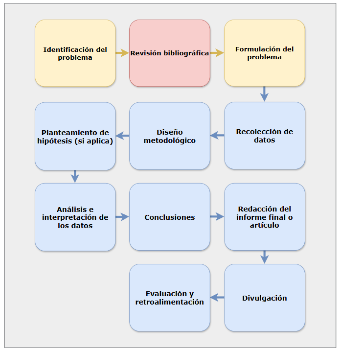

¿Qué es una Metodología de Investigación?
Una metodología de investigación es el conjunto de principios, procedimientos y técnicas que guían el proceso de investigación científica. Es un marco estructurado que permite a los investigadores planificar, organizar y ejecutar un estudio de forma sistemática y rigurosa, con el objetivo de:
- Responder preguntas
- Resolver problemas
- Generar nuevo conocimiento
El objetivo principal es asegurar que el proceso sea replicable, válido y confiable, adaptándose tanto al tipo de investigación como al área de estudio.
A continuación, se presenta un mapa metodológico de investigación:

Figura 1: "Mapa metodológico de investigación"
El mapa presenta una secuencia estructurada de etapas para el desarrollo de un proceso de investigación completo. En el presente trabajo, se profundizará principalmente en los tres primeros bloques metodológicos. El primer bloque corresponde a la identificación del problema, etapa fundamental donde se establece el problema de investigación como punto de partida del proceso. Posteriormente, se aborda la revisión bibliográfica, fase en la cual se analizan los trabajos previos y se identifica la problemática existente. Finalmente, se llega al tercer bloque que corresponde a la formulación del problema, consolidando así las bases iniciales de la investigación.
Sobre todo nos centramos en el bloque de Revisión bibliográfica que nos va a permitir entender el estado del arte de la investigación para evitar la repetición de trabajos y tener una base sólida para la investigación.